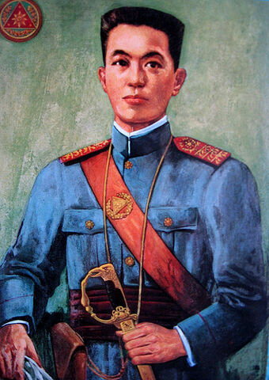

|
 | |
|
|
|
|---|
| Born: June 19, 1861 BirthPlace: Calamba, Laguna Died: December 30, 1896 Mother's Name: Teodora Morales Alonzo Realonda y Quintos Father's Name: Francisco Engracio Rizal Mercado y Alejandro Masterpiece: Noli Me Tangere El Filibusterismo |
Summary: José Protasio Rizal Mercado y Alonso Realonda was a Filipino nationalist and polymath during the tail end of the Spanish colonial period of the Philippines. He is tagged as the national hero of the Filipino people. |
| Born: 22 March 1869, Kawit Died: 6 February 1964, Quezon City Spouse: Maria Agoncillo (m. 1930–1963) Hilaria Aguinaldo (m. 1896–1921) Father's Name: Francisco Engracio Rizal Mercado y Alejandro Children: Cristina Aguinaldo Suntay, Miguel Aguinaldo, Carmen Aguinaldo Melencio, Maria Aguinaldo Poblete |
Summary: Emilio Aguinaldo y Famy QSC CCLH was a Filipino revolutionary, politician, and military leader who is officially recognized as the first and the youngest President of the Philippines and the first president of a constitutional republic in Asia. |
| Born: 23 October 1857, Badoc Died: 7 December 1899, Hong Kong Spouse:Paz Pardo de Tavera (m. 1886–1892) Periods: Romanticism, Realism, Impressionism Known For: Painting, drawing, sculpting |
Summary: Juan Luna de San Pedro y Novicio Ancheta was a Filipino painter, sculptor and a political activist of the Philippine Revolution during the late 19th century. He became one of the first recognized Philippine artists. |
| Born: 30 August 1850, Bulacan Died: 4 July 1896, Old Hospital de la Santa Creu, Barcelona, Spain Nickname: Plaridel Books: Marcelo H. Del Pilar, His Religious Conversions, Letters of Marcelo H. Del Pilar: A collection of letters of Marcelo H. del Pilar |
Summary: Marcelo Hilario del Pilar y Gatmaitán, commonly known as Marcelo H. del Pilar and also known by his pen name Plaridel, was a Filipino writer, lawyer, journalist, and freemason. Del Pilar, along with José Rizal and Graciano López Jaena, became known as the leaders of the Reform Movement in Spain. |
| Born: 30 Nobyembre 1863
Tondo, Maynila Died: 10 Mayo 1897 Maragondon, Cavite Cause of death: Execution Education: Self-educated Spouse: Gregoria De Jesus |
Summary Andrés Bonifacio y de Castro was a Filipino revolutionary leader and the president of the Tagalog Republic. He is often called "The Father of the Philippine Revolution". |
| Born: 23 July 1864, Tanauan Died: 13 May 1903, Manila Nickname: poly Books: SMabini's Decalogue for Filipinos, His Religious Conversions, Letters of Marcelo H. Del Pilar: The Letters of Apolinario Mabini, His Religious Conversions, Letters of Marcelo H. Del Pilar: Testament and Political Letters Profession: Politician |
Summary Apolinario Mabini y Maranan was a Filipino revolutionary leader, educator, lawyer, and statesman who served first as a legal and constitutional adviser to the Revolutionary Government, and then as the first Prime Minister of the Philippines upon the establishment of the First Philippine Republic. |